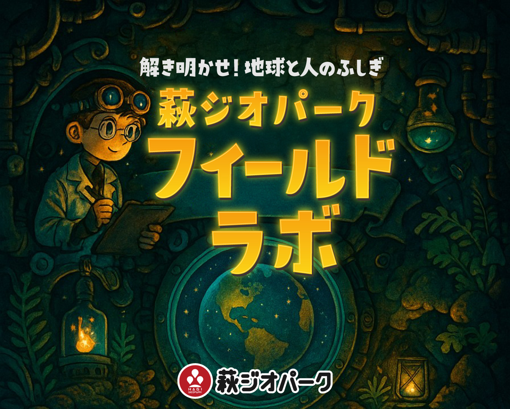

自然の一部としての人間社会。
大地と人のつながりの、今と移り変わりを記録する。
調査計画をまとめ、ミッションを統括する責任者。成果の取りまとめを担う。
現場を仕切るリーダー。調査手法の指導と記録のチェック、安全管理を行う。
参加者とともに現場に立ち、調査サポートや観察のアドバイスをする。
調査に任命された参加者。自らの観察と記録が成果を左右する主役。
組織に属さない独立した顧問。重要な場面で助言と監修を行う。
目的とテーマを定め、調査計画とチームを編成。予備調査で下見をする。
現地で観察・採集・計測。特別調査員が手を動かしてデータを取る。
データを分析し、何が起きているのかを読み解いて結論を導く。
レポートやWeb、SNSで発信。成果物を更新し、次のテーマにつなげる。